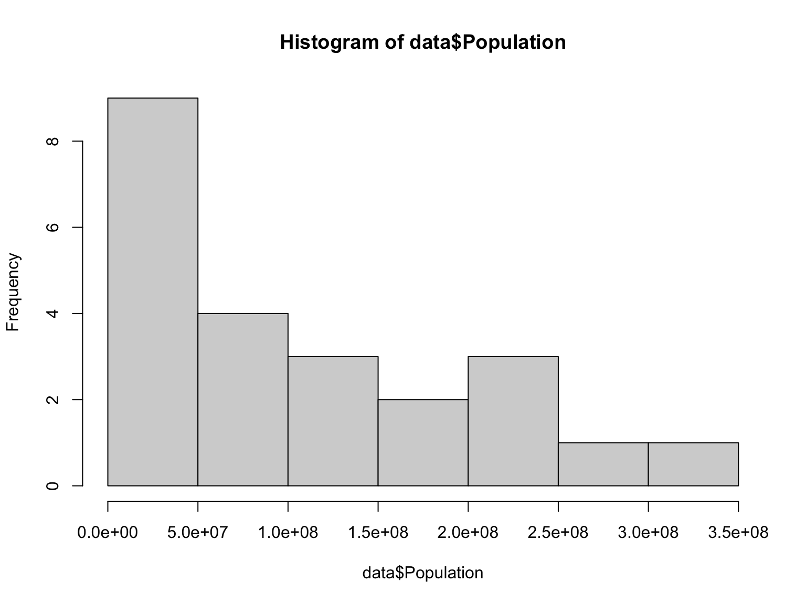
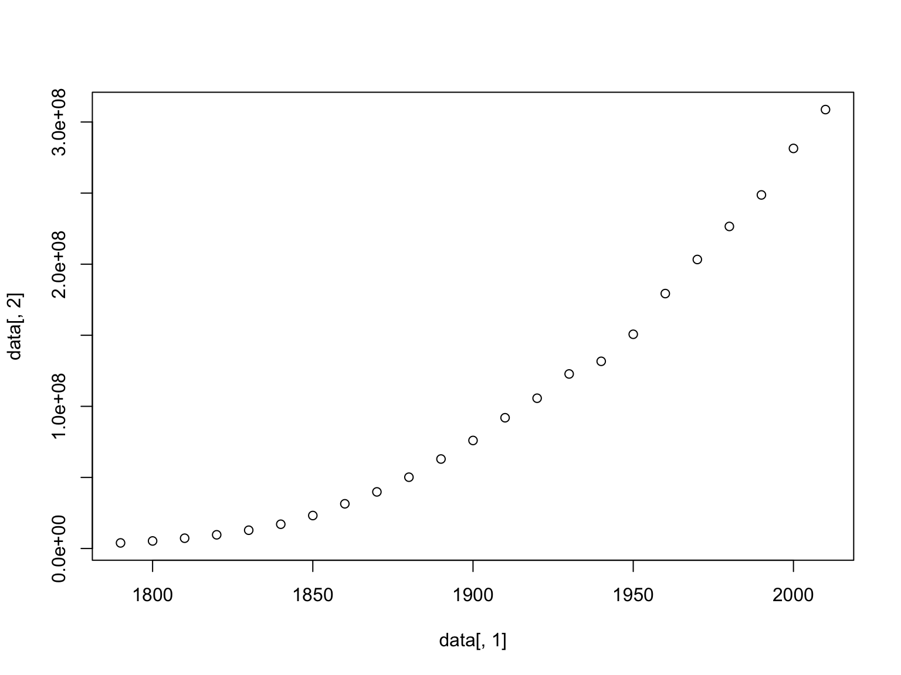
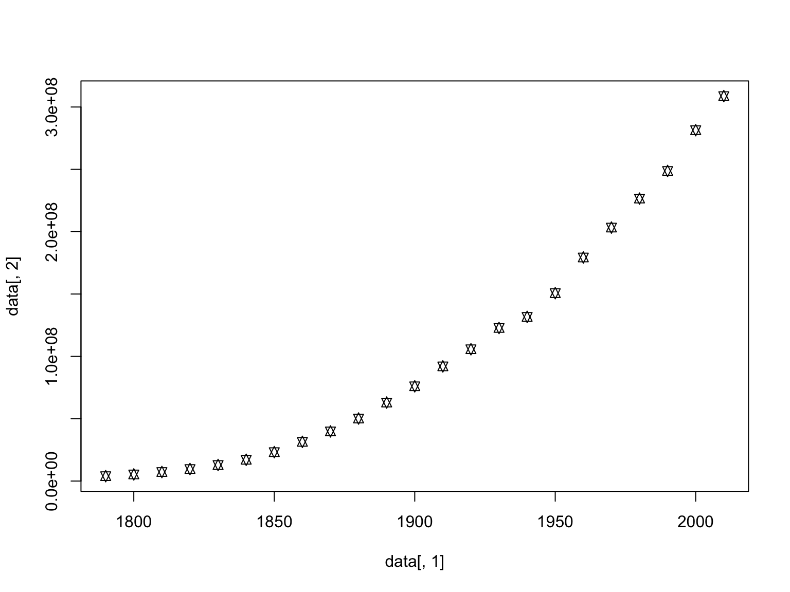
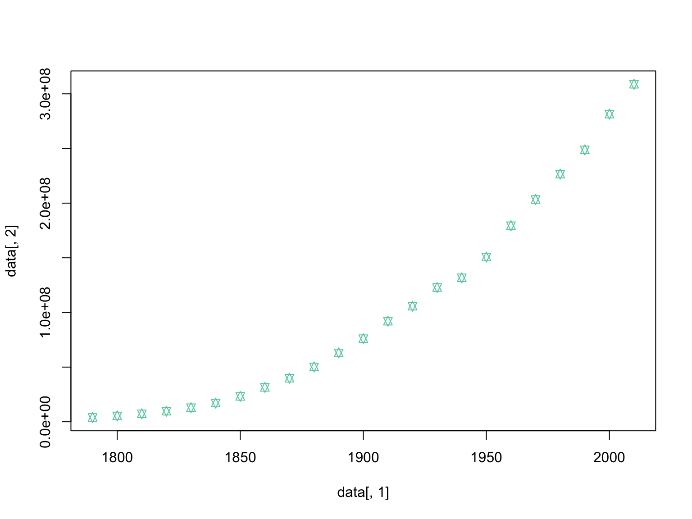
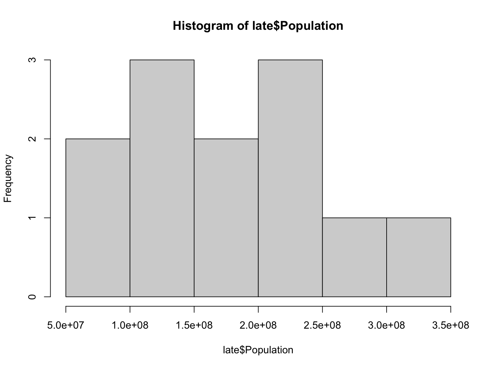
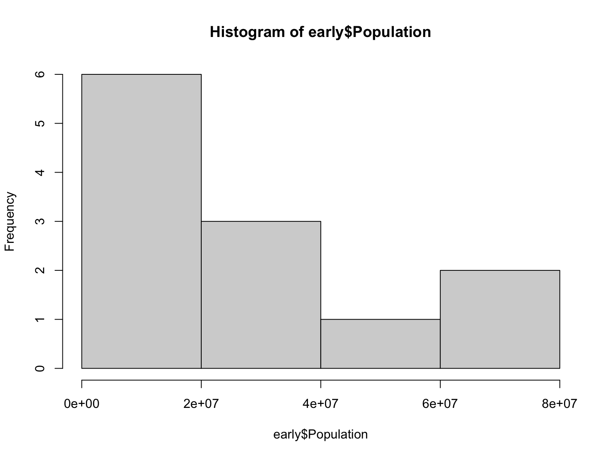
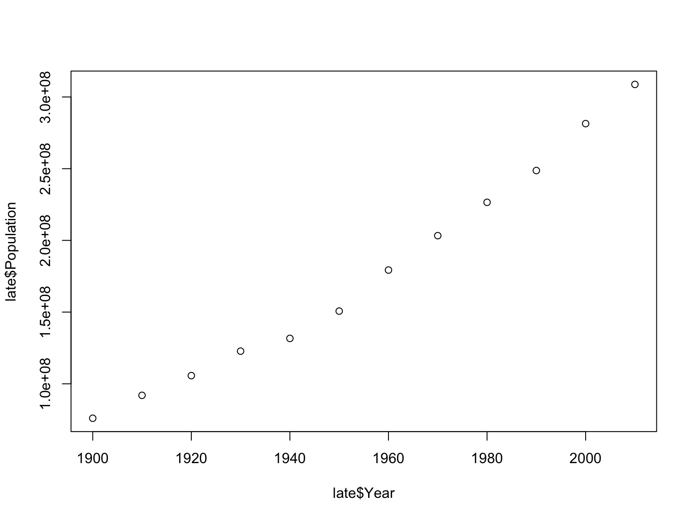
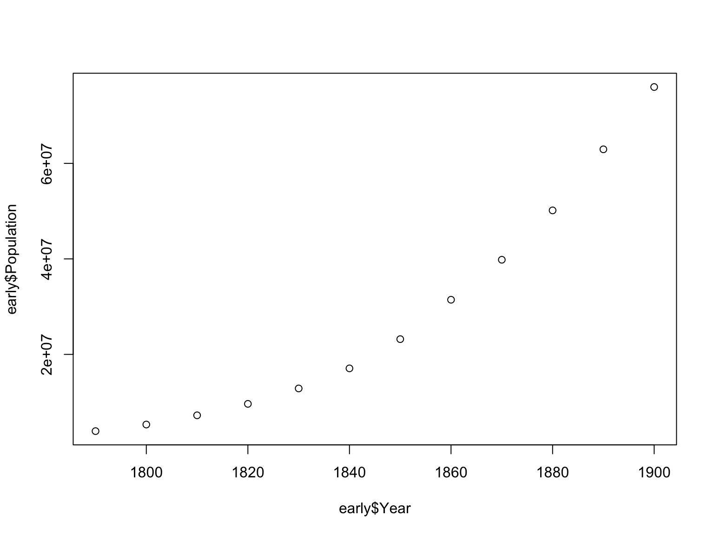
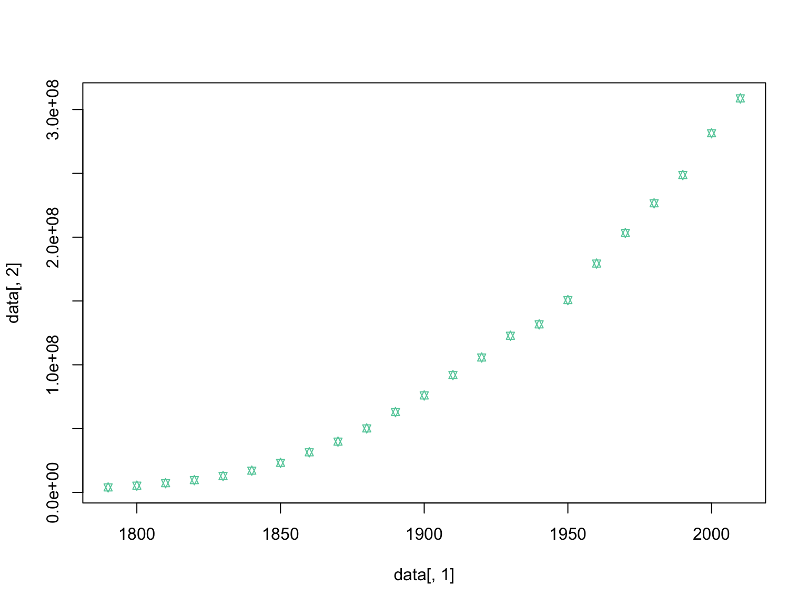

Basic Summary Statistics in R
Laurie Stevison
Getting Started
If you are using this code with the video, note that some slides
have been added post-recording and are not shown. In this video we
will be working with two files in R: USpop.csv and
BodyFat.csv. Both files are available to download. Make an
R Notebook for this walk through tutorial to save all the code you will
be learning. We will cover:
- Reading in datasets
- Various ways to subset data
- Basic Summary Statistics
mean and sdrangesummary
- Exploring data visually
- Using
hist function
- Using
plot function
- Testing for a statistial correlation
Set up workspace
You are working within an R project (check in the top right
corner of RStudio - you should see the project name
“R_Mini_Course”).
This means that the project directory will also be set as working
directory. The exception is in a R Notebook, where the working directory
is where the R Notebook is saved.
You should be saving your notebooks in the R Project and using
../.. to point at the main project directory.
Before starting, it may be helpful to have a chunk of code that
does the following:
- clear your workspace
rm(list=ls())
- load your packages
library(<package-name>)
- check your session information
sessionInfo()
- list files in your working directory
list.files(getwd())
rm(list=ls())
library(knitr)
sessionInfo()
## R version 4.2.1 (2022-06-23)
## Platform: x86_64-apple-darwin17.0 (64-bit)
## Running under: macOS Big Sur 11.7
##
## Matrix products: default
## LAPACK: /Library/Frameworks/R.framework/Versions/4.2/Resources/lib/libRlapack.dylib
##
## locale:
## [1] en_US.UTF-8/en_US.UTF-8/en_US.UTF-8/C/en_US.UTF-8/en_US.UTF-8
##
## attached base packages:
## [1] stats graphics grDevices utils datasets methods base
##
## other attached packages:
## [1] knitr_1.40 rmarkdown_2.17
##
## loaded via a namespace (and not attached):
## [1] digest_0.6.30 R6_2.5.1 jsonlite_1.8.3 magrittr_2.0.3 evaluate_0.18
## [6] highr_0.9 stringi_1.7.8 cachem_1.0.6 rlang_1.0.6 cli_3.4.1
## [11] rstudioapi_0.14 jquerylib_0.1.4 bslib_0.4.1 tools_4.2.1 stringr_1.4.1
## [16] xfun_0.34 yaml_2.3.6 fastmap_1.1.0 compiler_4.2.1 htmltools_0.5.3
## [21] sass_0.4.2
## [1] "_site.yml" "4.02.Basic_Summary_Statistics_in_R_files"
## [3] "4.02.Basic_Summary_Statistics_in_R.html" "4.02.Basic_Summary_Statistics_in_R.Rmd"
## [5] "4.03.Data_Manipulation_in_R.Rmd" "4.04.Advanced_Statistical_Concepts_in_R.Rmd"
## [7] "4.05.R_on_CL.Rmd" "4.06.Programming_in_R.Rmd"
## [9] "5.03.Advanced_Graphing_in_R.Rmd" "about.Rmd"
## [11] "Activity1_intro.pdf" "activity1.html"
## [13] "activity1.Rmd" "activity1key.html"
## [15] "activity1key.Rmd" "activity2.html"
## [17] "activity2.Rmd" "activity3.html"
## [19] "activity3.Rmd" "Body_Fat.pdf"
## [21] "Congrats.html" "Congrats.Rmd"
## [23] "data" "docs"
## [25] "images" "index.html"
## [27] "index.Rmd" "LICENSE"
## [29] "module1.html" "module1.Rmd"
## [31] "module2.html" "module2.Rmd"
## [33] "module3.html" "module3.Rmd"
## [35] "module4.html" "module4.Rmd"
## [37] "module5.html" "module5.Rmd"
## [39] "module6.html" "module6.Rmd"
## [41] "module7.html" "module7.Rmd"
## [43] "modules" "R_Mini_Course.Rproj"
## [45] "raw_data" "README.md"
## [47] "README.Rmd" "site_libs"
Read in dataset
The first file contains 200 years of US census data.
You will need to add path information to the raw_data
directory once you have uncompressed the data tarball. Read the file
into an object called “data”:
#data=read.csv(file="USPop.csv")
You may also read in the previously made object into “data”:
data <- readRDS(file = "data/USPop.rds")
Subset a column
To calculate the mean population size, you need to tell R to
specifically look at the second column. Note the two different ways to
specify the second column:
## [1] 103933744
## [1] 103933744
Basic Summary Statistics
Next, we will cover some basic summary statistics of your new
dataset. These commands can be used to explore your data. Note
summary contains mean and range within it’s output.
## [1] 96177866
## [1] 1790 2010
## Min. 1st Qu. Median Mean 3rd Qu. Max.
## 3929214 20130664 75994575 103933744 165010268 308745538
Basic plotting to summarize data
Two ways of examining data are to make histogram plots of a vector
within the dataset or to plot two of the vectors against each other:

Basic plotting to summarize data

#change the point character
plot(data[,1], data[,2],pch=11)

#change the point color
plot(data[,1], data[,2],pch=11, col="#66CDAA")

#change the size of the points relative to the plot
plot(data[,1], data[,2],pch=11, col="#66CDAA",cex=0.8)

Next week we will learn how to make these plots look much nicer, but
today we are focused on using them to visually inspect our data.
Anscombe’s Quartet
Some datasets can look very similar using simply summary statistics,
but upon closer inspection using plots, they are indeed quite different.
For this reason it is important to explore your datasets in
both ways.
Anscombe’s quartet is a built in dataset within R. You can access it
by typing anscombe into your console:
Anscomble’s Quartet
| 10 |
10 |
10 |
8 |
8.04 |
9.14 |
7.46 |
6.58 |
| 8 |
8 |
8 |
8 |
6.95 |
8.14 |
6.77 |
5.76 |
| 13 |
13 |
13 |
8 |
7.58 |
8.74 |
12.74 |
7.71 |
| 9 |
9 |
9 |
8 |
8.81 |
8.77 |
7.11 |
8.84 |
| 11 |
11 |
11 |
8 |
8.33 |
9.26 |
7.81 |
8.47 |
| 14 |
14 |
14 |
8 |
9.96 |
8.10 |
8.84 |
7.04 |
| 6 |
6 |
6 |
8 |
7.24 |
6.13 |
6.08 |
5.25 |
| 4 |
4 |
4 |
19 |
4.26 |
3.10 |
5.39 |
12.50 |
| 12 |
12 |
12 |
8 |
10.84 |
9.13 |
8.15 |
5.56 |
| 7 |
7 |
7 |
8 |
4.82 |
7.26 |
6.42 |
7.91 |
| 5 |
5 |
5 |
8 |
5.68 |
4.74 |
5.73 |
6.89 |
On your own…
Extract a corresponding set of x and y values from the dataset. Note
the two possible ways to do this:
set1=anscombe[,c(1,5)]
set1=anscombe[,c("x1","y1")]
Explore data using summary statistics
Now, as you did before, explore this dataset with mean summary
statistics.
Compare the summary statistics of the set of x and y
coordinates you had with others in your lab group (post a chat in MS
teams in your private channel). Based on the summary statistics alone,
how similar would you guess these datasets are?
Example summary statistics using set 1
## x1 y1
## Min. : 4.0 Min. : 4.260
## 1st Qu.: 6.5 1st Qu.: 6.315
## Median : 9.0 Median : 7.580
## Mean : 9.0 Mean : 7.501
## 3rd Qu.:11.5 3rd Qu.: 8.570
## Max. :14.0 Max. :10.840
## [1] 3.316625
## [1] 2.031568
Explore data visually
Make a histogram of the x and y sets. Then plot them against each
other.
Again, compare the results of these tests with others in your
lab group. Did the visual inspection of these datasets change your mind
about how similar the four sets of data are in anscombe’s
quartet?
Example plots using set 1


Test for a statistical correlation
Finally, let’s test for a statistical correlation between the x and y
vectors.
cor.test(set1$x1,set1$y1)
##
## Pearson's product-moment correlation
##
## data: set1$x1 and set1$y1
## t = 4.2415, df = 9, p-value = 0.00217
## alternative hypothesis: true correlation is not equal to 0
## 95 percent confidence interval:
## 0.4243912 0.9506933
## sample estimates:
## cor
## 0.8164205
cor.test(set1$x1,set1$y1)$est
## cor
## 0.8164205
Note the second time we run the command we only have it print the
estimate.
Subsampling
Finally, let’s return to our US Census data. Looking back at the plot
of increase in population size per decade, we can compare the rate of
growth prior to the turn of the 19th century to afterward. We will use
the function subset to accomplish this task:
early=subset(data, data$Year<=1900)
late=subset(data,data$Year>=1900)
Hisotgram of each subset
Now, we can make histograms of the population size in these two
subsets of the original dataset:


Plotting
As we did before, let’s look at how the population size changed over
time in these two distinct periods in US history:
plot(late$Year,late$Population)

plot(early$Year,early$Population)

#Original plot from before
plot(data[,1], data[,2],pch=11, col="#66CDAA",cex=0.8)

Test for statistical correlation
Let’s compare the growth of the US population between the early and
the late periods. First, we can do a correlation test:
cor.test(early$Population,late$Population)
##
## Pearson's product-moment correlation
##
## data: early$Population and late$Population
## t = 17.543, df = 10, p-value = 7.7e-09
## alternative hypothesis: true correlation is not equal to 0
## 95 percent confidence interval:
## 0.9426362 0.9956808
## sample estimates:
## cor
## 0.9841383
cor.test(early$Population,late$Population,method="spearman")
##
## Spearman's rank correlation rho
##
## data: early$Population and late$Population
## S = 0, p-value < 2.2e-16
## alternative hypothesis: true rho is not equal to 0
## sample estimates:
## rho
## 1
In the second example, we changed the default method from Pearson to
Spearman. Why?
Types of statistical correlation
These are two different types of statistical correlation. The default
is a Pearson correlation test, which expects a monotonic increase in the
data, while a Spearman correlation is based on rank order.
To understand why the latter gives a better estimate, let’s look at
these two growth periods together to better understand their
relationship:
plot(early$Population,late$Population)

Body Fat dataset
After finishing this video, work with the second dataset
BodyFat.csv. Follow the same process you did for the two
previous datasets:
- Read the data into an object named
fat
- Pick a variable of interest to work with further
- Make a new object containing that variable along with body fat (the
response variable)
- Run some basic summary statistics of the variable and of body
fat
- Make a histogram of the selected variable and body fat
- Plot the variable against body fat
- Test for a statistical correlation with body fat
Compare your results with others in your lab
group.
Compare your results
Fill in the table below (see xlxs file now in your MS Teams channel
for your group) for each variable, the correlation estimate from
cor.test, and specify whether they correlate with body fat
based on the significance of the correlation.
| DENSITY |
Est: |
Y | N |
| AGE |
Est: |
Y | N |
| WEIGHT |
Est: |
Y | N |
| HEIGHT |
Est: |
Y | N |
| ADIPOSITY |
Est: |
Y | N |
| NECK |
Est: |
Y | N |
| CHEST |
Est: |
Y | N |
| ABDOMEN |
Est: |
Y | N |
| HIP |
Est: |
Y | N |
| THIGH |
Est: |
Y | N |
| KNEE |
Est: |
Y | N |
| ANKLE |
Est: |
Y | N |
| BICEPS |
Est: |
Y | N |
| FOREARM |
Est: |
Y | N |
| WRIST |
Est: |
Y | N |